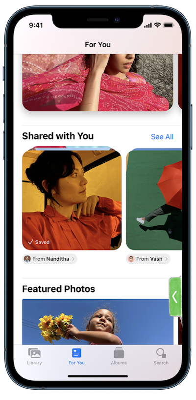

iOS Concept: Floating Call Window
Background
iPhones are brimming with the latest tech and features. But, in the end, they are still identified as a phone. And providing a good phone call experience should always be the priority.
Like many others, after the pandemic hit, I started working remotely. Day-to-day meetings turned into phone calls and Zoom meetings, and most sessions were audio-only. Having a smartphone, I could now attend calls without being glued to a desk.
Muting when not speaking became a habit.
Problem
I'd often find myself looking up an e-mail or an article during the call. To unmute myself, I have to return to the call by tapping the green call indicator at the top of the screen and then find the unmute button.
Be it the stock Phone app or Zoom, the process is the same.
Solution
A persistent floating widget with audio controls when the user switches the app.
Inspiration
Zoom mini window that appears when the main app is minimised
Compact call banners introduced in iOS 14 (Source: Apple)
iPadOS Picture in Picture for FaceTime (Source: Apple)
Requirements
- A mute/unmute button
- End call button
- Audio button - to change audio output
Concept
A floating window with 3 buttons
- Mute/unmute
- Speaker
- End call
The window is draggable and can be hidden on the side
The window off the canvas with a green tab denoting an active call
Back to Portfolio